3.1 แดชบอร์ดผู้ดูแลระบบ#
เมื่อผู้ดูแลระบบเข้าสู่ระบบ ระบบจะพาไปยังหน้า แดชบอร์ด โดยอัตโนมัติ
- สถิติรวม จำนวนผู้ใช้ นักศึกษา รายวิชา และห้องเรียนทั้งหมด
- ผู้ใช้งานตามบทบาท และ รายละเอียดห้องเรียน (โต๊ะทั้งหมด คอมพิวเตอร์ ใช้งานได้/ปิดใช้งาน)
- สถานะเซิร์ฟเวอร์ CPU หน่วยความจำ และเวลาทำงาน พร้อมบันทึกระบบ 24 ชั่วโมงล่าสุด
- เมนูด้านซ้าย เข้าถึงทุกโมดูล ได้แก่ ผู้ใช้งาน นักศึกษา รายวิชา ห้องเรียน ข้อเสนอแนะ บันทึกระบบ มอนิเตอร์ระบบ และตั้งค่า
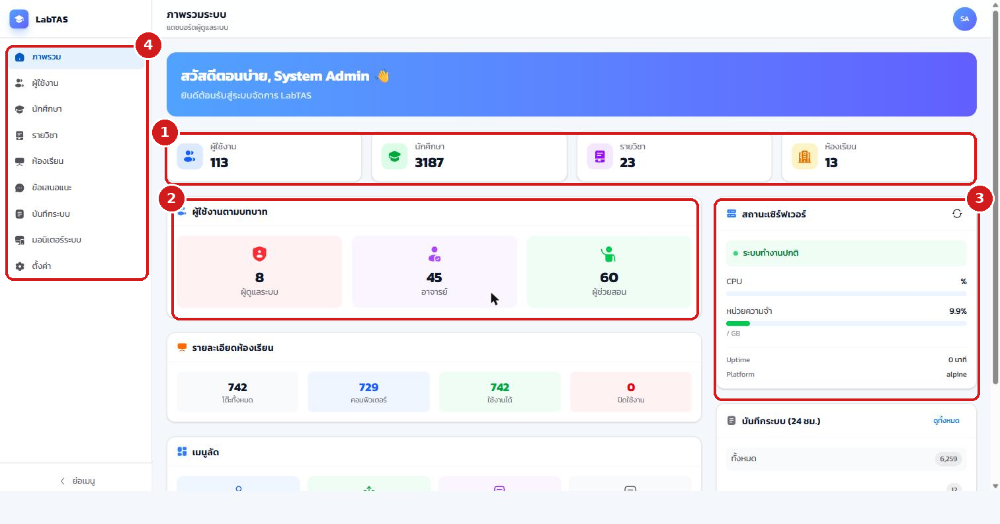
3.2 จัดการผู้ใช้ (แอดมิน อาจารย์ ผู้ช่วยสอน)#
เมนู ผู้ใช้งาน ใช้จัดการบัญชีผู้ใช้ระบบทั้งหมด
- ส่วนบนสรุปจำนวน ผู้ใช้ทั้งหมด ผู้ดูแลระบบ อาจารย์ และผู้ช่วยสอน
- คลิกปุ่ม เพิ่มผู้ใช้ เพื่อสร้างบัญชีใหม่
- ใช้ ช่องค้นหา และตัวกรองบทบาท/สถานะ
- แต่ละแถวแสดง บทบาท สถานะ การเปิด 2FA และประเภทบัญชี พร้อมปุ่มแก้ไข รีเซ็ตรหัสผ่าน และเปิด/ปิดการใช้งาน
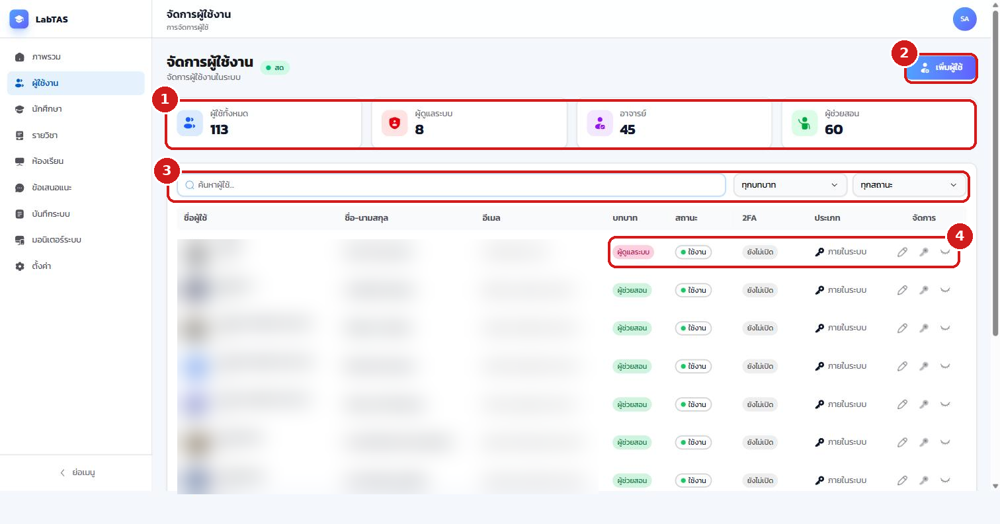
เมื่อคลิก เพิ่มผู้ใช้ ระบบจะเปิดฟอร์มกรอกข้อมูล
- รูปโปรไฟล์ (ไม่บังคับ)
- ข้อมูลส่วนตัว ชื่อ-นามสกุล และอีเมล (ไม่บังคับ)
- ข้อมูลบัญชี ชื่อผู้ใช้ และเลือกบทบาท (ผู้ดูแลระบบ / อาจารย์ / ผู้ช่วยสอน)
- คลิก เพิ่มผู้ใช้ ระบบจะสร้าง รหัสผ่านชั่วคราว แสดงขึ้นมาหนึ่งครั้ง ให้ส่งต่อแก่ผู้ใช้เพื่อเข้าสู่ระบบครั้งแรก (ระบบจะบังคับเปลี่ยนรหัสผ่านเมื่อเข้าครั้งแรก)
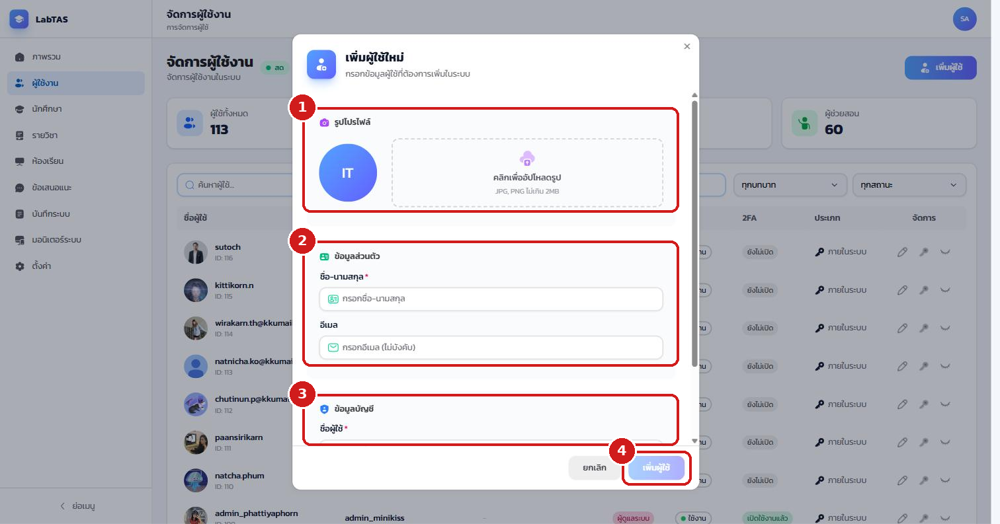
การปิดการใช้งานบัญชี (ไอคอนรูปตา) มีผลทันทีทำให้ผู้ใช้นั้นเข้าสู่ระบบไม่ได้ และการลบผู้ใช้เป็นแบบ soft delete ข้อมูลยังอยู่ในระบบเพื่อการตรวจสอบย้อนหลัง
3.3 จัดการนักศึกษา#
เมนู นักศึกษา ใช้จัดการข้อมูลนักศึกษาทั้งหมด ซึ่งเป็นข้อมูลแยกจากบัญชีผู้ใช้ระบบ (นักศึกษาโดยปกติไม่มีรหัสผ่านเข้าระบบ)
- ส่วนบนสรุปจำนวนนักศึกษา ทั้งหมด ใช้งาน และปิดใช้งาน
- ปุ่มด้านขวาบนใช้ จัดการหลักสูตร นำเข้าข้อมูล (Excel/CSV) และเพิ่มนักศึกษา รายคน
- ใช้ ช่องค้นหา ค้นด้วยรหัสนักศึกษา ชื่อ หรืออีเมล
- แต่ละแถวแสดง หลักสูตร สถานะ วันที่สร้าง พร้อมปุ่มแก้ไขและเปิด/ปิดสถานะ
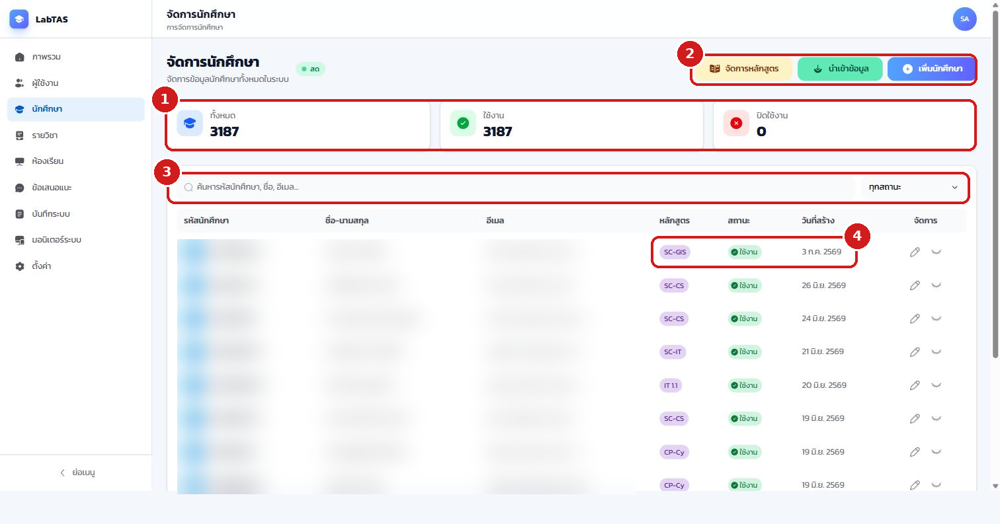
เฉพาะผู้ดูแลระบบเท่านั้นที่สร้าง แก้ไข นำเข้า และลบนักศึกษาได้ อาจารย์และผู้ช่วยสอนทำได้เพียงค้นหาและดูรายชื่อ การนำเข้าแบบกลุ่มควรตรวจสอบรูปแบบไฟล์ให้ถูกต้องก่อนทุกครั้ง
3.4 จัดการรายวิชา#
เมนู รายวิชา ใช้จัดการรายวิชาทั้งหมดในระบบ
- ส่วนบนสรุปจำนวนรายวิชา ทั้งหมด ใช้งาน ปิดใช้งาน และของปีนี้
- คลิกปุ่ม เพิ่มรายวิชา เพื่อสร้างรายวิชาใหม่ (กำหนดรหัสวิชา ชื่อวิชา ปีการศึกษา ภาคเรียน และอาจารย์เจ้าของวิชา)
- ใช้ ตัวกรอง ตามปีการศึกษา ภาคเรียน และสถานะ
- ปุ่มจัดการท้ายแถวใช้ เข้าสู่วิชา แก้ไข เปิด/ปิด และลบ และยังเลือกหลายวิชาพร้อมกันเพื่อเปิด/ปิด/ลบแบบกลุ่ม รวมถึงส่งออกข้อมูลเป็น CSV ได้
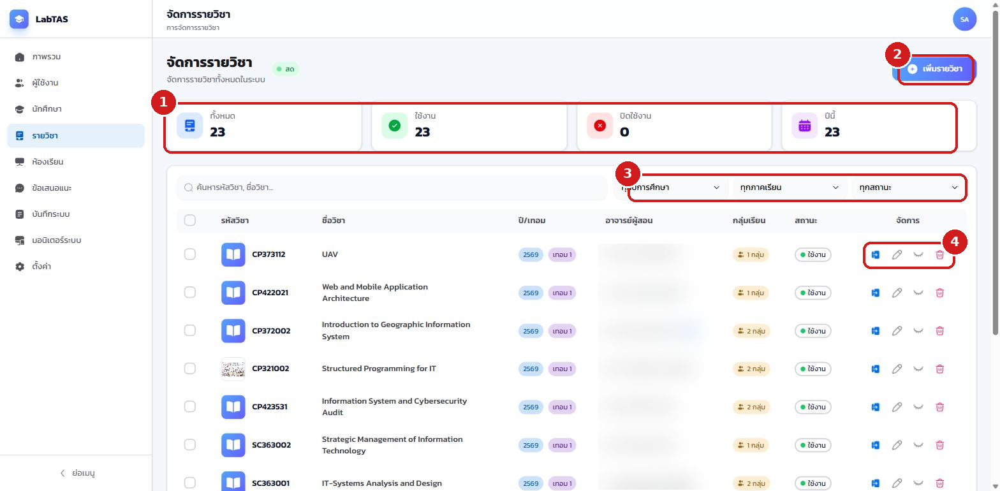
3.5 จัดการห้องเรียนและผังที่นั่ง#
เมนู ห้องเรียน ใช้จัดการห้องปฏิบัติการสำหรับระบบจองคิว โครงสร้างเป็น ห้อง → โซน → โต๊ะ โดยโต๊ะแต่ละตัวเก็บพิกัด ประเภท (คอมพิวเตอร์/เรียน/อาจารย์) และข้อมูลเครื่อง
- ส่วนบนสรุป ห้องเรียนทั้งหมด โต๊ะทั้งหมด โต๊ะคอมพิวเตอร์ และถังขยะ
- ปุ่ม สร้างห้องเรียนใหม่ ใช้เพิ่มห้อง และ ดูถังขยะ ใช้กู้คืนห้องที่ถูกลบ
- คอลัมน์ จำนวนโต๊ะ แสดงจำนวนโต๊ะและคอมพิวเตอร์ของแต่ละห้อง
- ปุ่มจัดการท้ายแถว ได้แก่ ปิด/เปิดใช้งานห้อง แก้ผังที่นั่ง แก้ไขข้อมูล ดู QR ประจำโต๊ะ และลบห้อง
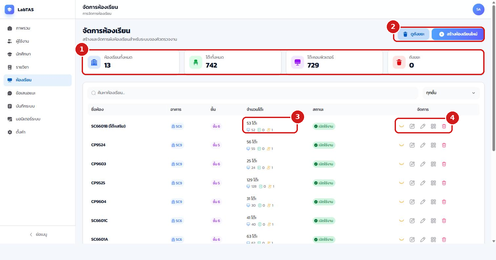
การแก้ผังที่นั่งแบบวิชวล
คลิกไอคอนแก้ผังที่นั่งของห้องที่ต้องการ ระบบจะเปิด หน้าจัดผังห้อง แบบลากวาง
- ส่วน เพิ่มโต๊ะ เลือกจำนวนและประเภทโต๊ะ (โต๊ะคอม / โต๊ะเรียน / โต๊ะอาจารย์) แล้วคลิกเพื่อเพิ่มลงผัง
- ส่วน โซน ใช้แบ่งพื้นที่ห้องเป็นโซนย่อย
- ส่วน สัญลักษณ์ อธิบายสีของโต๊ะแต่ละประเภทและสถานะปิดใช้งาน
- พื้นที่ผัง ลากโต๊ะเพื่อย้ายตำแหน่ง คลิกโต๊ะเพื่อแก้ไขหรือลบ กด Ctrl+คลิกเพื่อเลือกหลายโต๊ะ และ Scroll เพื่อซูม
- เมื่อจัดเสร็จ คลิก บันทึกผัง (ระบบมีการบันทึกแบบร่างอัตโนมัติระหว่างทำงาน)
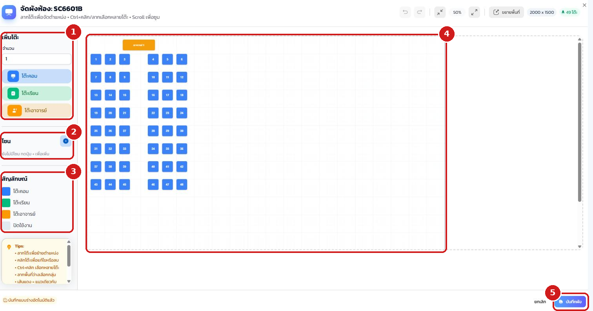
การปิดใช้งานห้อง
เมื่อคลิกปิดใช้งานห้อง ระบบจะขอคำยืนยันก่อน
- ข้อความเตือนระบุผลกระทบ ห้องที่ปิดใช้งานจะไม่สามารถใช้ในระบบจองคิวได้ แต่ข้อมูลยังคงอยู่
- กด ปิดใช้งาน เพื่อยืนยัน หรือ ยกเลิก เพื่อยกเลิกรายการ
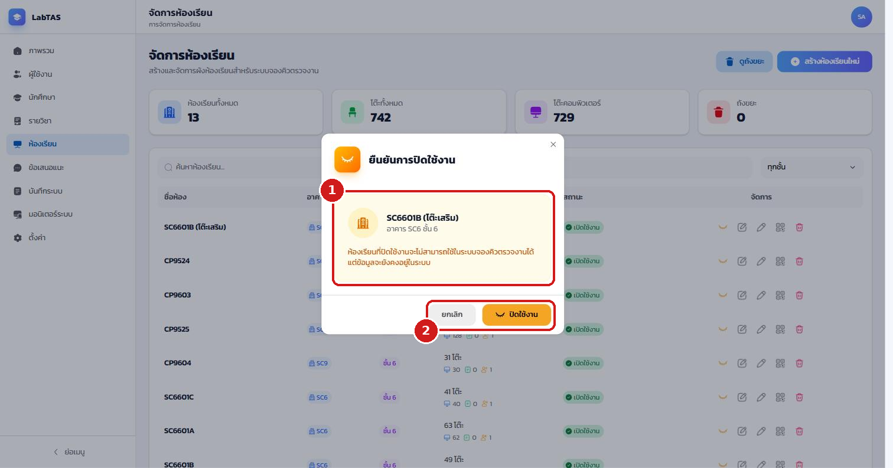
3.6 จัดการข้อเสนอแนะ (Feedback)#
เมนู ข้อเสนอแนะ รวมข้อผิดพลาด ข้อเสนอแนะ และคำขอสนับสนุนจากผู้ใช้และบุคคลทั่วไป
- ส่วนบนสรุปจำนวนตามสถานะ ทั้งหมด รอดำเนินการ กำลังตรวจสอบ แก้ไขแล้ว ข้อผิดพลาด และคำขอสนับสนุน
- ใช้ ตัวกรอง ตามประเภท สถานะ และระดับความสำคัญ
- แต่ละแถวแสดง สถานะและความสำคัญ ซึ่งผู้ดูแลระบบปรับได้พร้อมบันทึกภายใน
- ปุ่มท้ายแถวใช้ ดูรายละเอียดและลบ
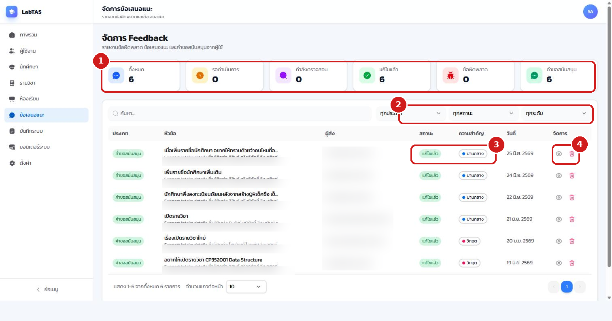
3.7 บันทึกระบบ (System Logs)#
เมนู บันทึกระบบ รวมบันทึกการใช้งานและการกระทำสำคัญของผู้ดูแลระบบ
- แท็บ System Logs และ กิจกรรมรายวิชา แยกมุมมองระบบกับมุมมองรายวิชา
- แถบสรุปแบ่งตามประเภท การเข้าถึง ผิดพลาด ยืนยันตัว ความปลอดภัย พร้อมตัวนับ Permission changes / Member changes / Feedback actions / Course governance
- ใช้ ป้ายหมวดและตัวกรอง (ประเภท ระดับ ช่วงเวลา action) ค้นหาเหตุการณ์ ตารางแสดงเวลา ประเภท ระดับ action สถานะ IP และผู้ใช้
- ปุ่ม ส่งออก CSV ดาวน์โหลดบันทึกไปวิเคราะห์ต่อ
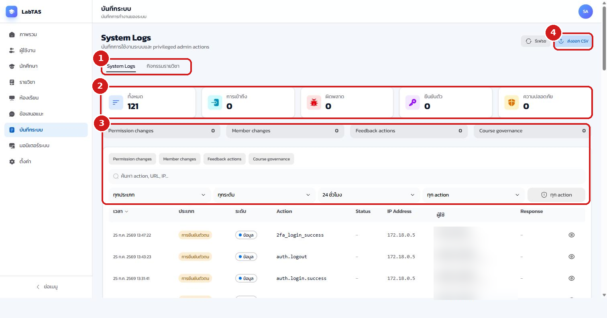
การล้างบันทึก (cleanup logs) เป็นการกระทำที่ต้องยืนยันตัวตนสองชั้นซ้ำ (step-up 2FA) ก่อนดำเนินการทุกครั้ง
3.8 มอนิเตอร์ระบบ#
เมนู มอนิเตอร์ระบบ ติดตามสุขภาพเซิร์ฟเวอร์ เว็บไซต์ และ container แบบเรียลไทม์ แบ่งเป็น 4 แท็บ
- แท็บ ภาพรวม แสดงสถานะรวม การ์ด CPU/หน่วยความจำ/ดิสก์/สถานะเว็บไซต์ เวลาตอบสนอง (P50/P95/P99) Error Rate และ Request Rate พร้อมกราฟแนวโน้มย้อนหลัง
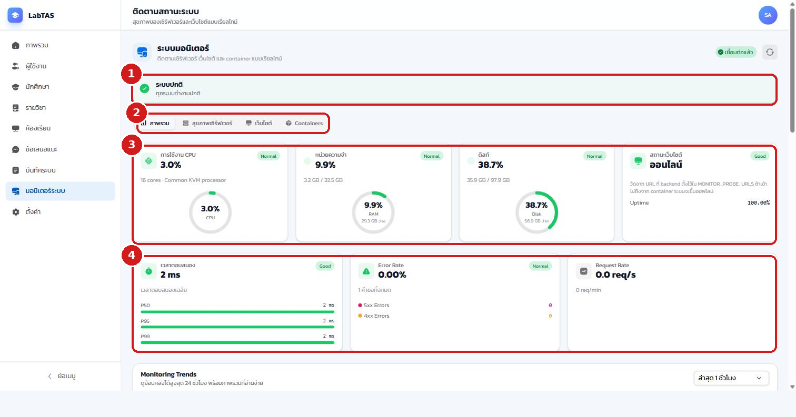
แท็บ สุขภาพเซิร์ฟเวอร์ เจาะลึกตัวเครื่อง
- เลือกแท็บ สุขภาพเซิร์ฟเวอร์
- การ์ดแสดง CPU หน่วยความจำ และดิสก์ พร้อมจำนวนคอร์และขนาดรวม
- ส่วนล่างแสดง Network I/O, Load Average และเวลาทำงานเซิร์ฟเวอร์ โดยรีเฟรชอัตโนมัติทุก 5 วินาที
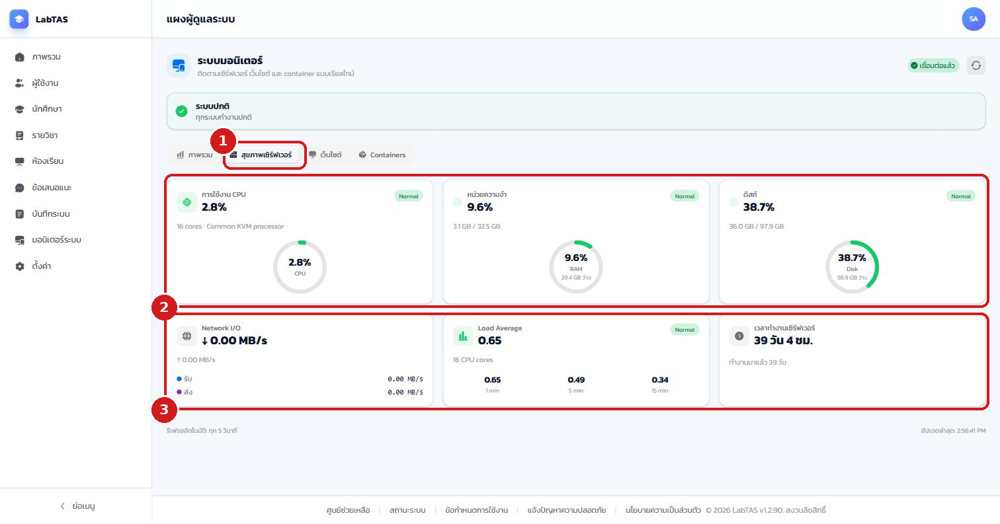
แท็บ Containers แสดงสถานะ container ที่ระบบรันอยู่ (ถ้ามีการเชื่อมต่อ)
- เลือกแท็บ Containers
- ตารางแสดงรายการ container พร้อมสถานะและทรัพยากรที่ใช้
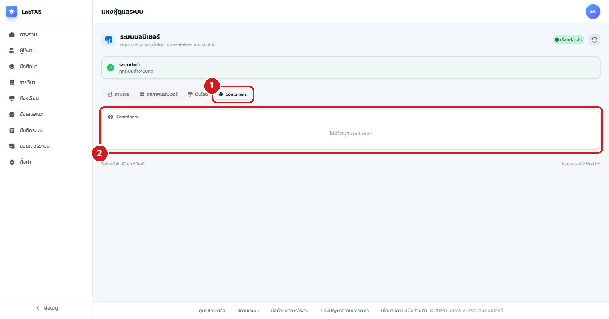
การสั่งดำเนินงานกับเซิร์ฟเวอร์ (รีสตาร์ทบริการ รีบูตโฮสต์) ทำจากหน้าตั้งค่าระบบ และต้องยืนยันตัวตนสองชั้นซ้ำทุกครั้ง ควรทำเฉพาะเมื่อจำเป็นเพราะกระทบผู้ใช้ทั้งระบบ
3.9 ตั้งค่าระบบ#
เมนู ตั้งค่า รวมการดำเนินงานระดับระบบทั้งหมด
สำรองฐานข้อมูลและการควบคุมระบบ
- ส่วน สำรองฐานข้อมูล แสดงเวลาสำรองสำเร็จล่าสุดและจำนวนรายการ
- ปุ่ม สำรองทันที สั่งสำรองข้อมูลนอกรอบอัตโนมัติ
- ส่วน การควบคุมระบบ แสดงประวัติและไทม์ไลน์การดำเนินการ
- ปุ่ม รีสตาร์ทบริการ และ รีบูตโฮสต์ ใช้เริ่มระบบใหม่ (ต้องยืนยัน 2FA ซ้ำ และยกเลิกได้ระหว่างนับถอยหลัง)
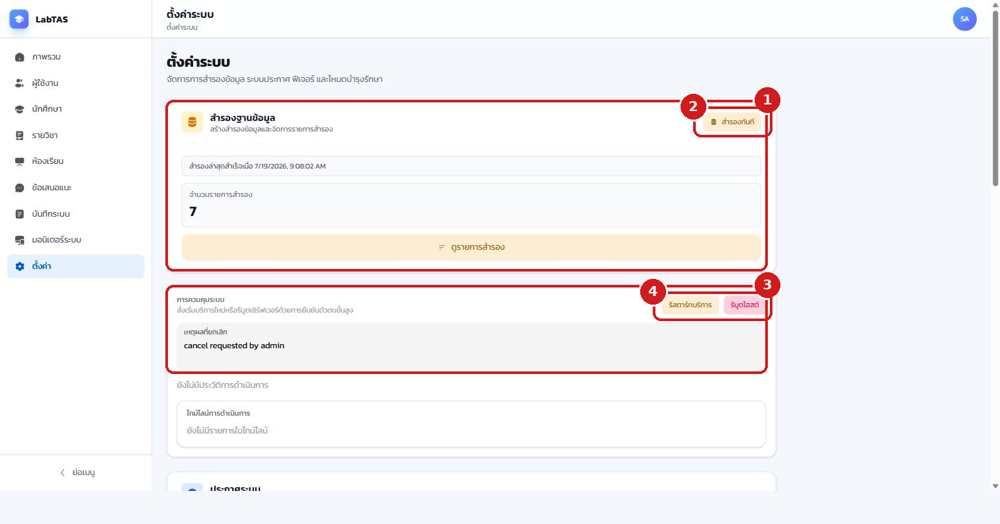
คลิก ดูรายการสำรอง เพื่อตรวจสอบและกู้คืนข้อมูล
- เลือกการเรียงลำดับ (ล่าสุดก่อน)
- ตารางแสดง ชื่อไฟล์สำรอง (เข้ารหัส) สล็อต วันที่สร้าง และขนาด
- ปุ่ม กู้คืน ใช้ย้อนฐานข้อมูลกลับไปยังจุดสำรองนั้น (ต้องยืนยัน 2FA ซ้ำ) และ ลิงก์ดาวน์โหลด ใช้ดาวน์โหลดไฟล์สำรองเก็บภายนอก
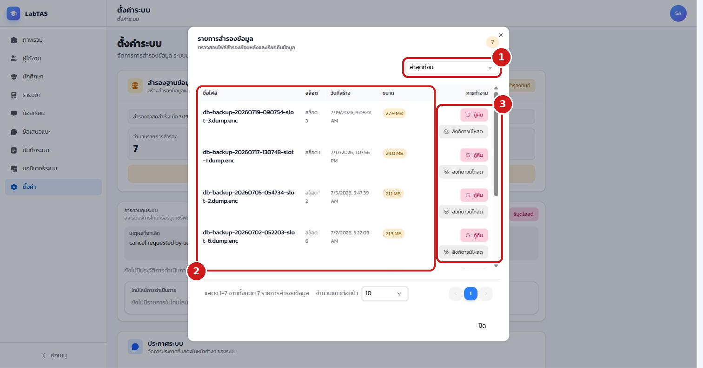
ประกาศระบบ
- ส่วน ประกาศระบบ แสดงจำนวนประกาศทั้งหมดและที่ใช้งานอยู่ ปุ่ม สร้างประกาศ ใช้สร้างประกาศใหม่ โดยกำหนดได้ 2 ภาษา (ไทย/อังกฤษ) แนบรูป ตั้งช่วงเวลาแสดง เลือกกลุ่มเป้าหมาย รูปแบบการแสดง (เต็มหน้าจอ/แบนเนอร์ด้านบน) และบังคับให้ผู้ใช้กดรับทราบได้
คลิก ดูประกาศทั้งหมด เพื่อจัดการประกาศที่มีอยู่
- ค้นหาและกรอง ประกาศตามสถานะ
- ตารางแสดงประกาศพร้อม รูปแบบการแสดง สถานะ และจำนวนผู้กดรับทราบ
- ปุ่ม ทำสำเนา และ แก้ไข ใช้จัดการรายประกาศ
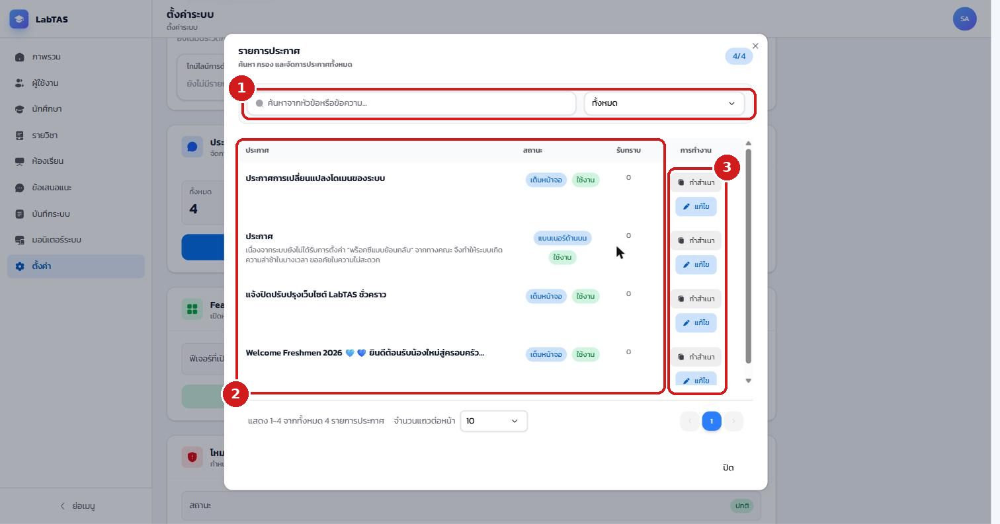
Feature Flags
คลิก จัดการ Feature Flags เพื่อเปิด/ปิดฟีเจอร์รายส่วนทั้งระบบ
- แถบเตือนย้ำว่า การเปลี่ยนสถานะมีผลทันทีต่อผู้ใช้ทุกคน
- ค้นหาและกรอง ฟีเจอร์จากชื่อหรือคำอธิบาย
- ปุ่ม ปิดทั้งหมด / เปิดทั้งหมด ใช้สลับทั้งชุด
- สวิตช์รายฟีเจอร์จัดกลุ่มตามหมวด เช่น งานสอนและการดำเนินการ (เช็คชื่อ คิว) และการวัดผล (งานและการบ้าน) โดยแต่ละรายการระบุรหัสฟีเจอร์กำกับ (เช่น menu.attendance)
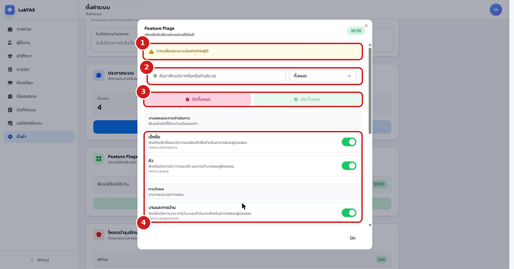
โหมดบำรุงรักษาและสุขภาพบริการ
ส่วน โหมดบำรุงรักษา ใช้กำหนดช่วงเวลาปิดปรับปรุงและข้อความที่จะแสดงหน้า maintenance แก่ผู้ใช้ (การเปิดโหมดต้องยืนยัน 2FA ซ้ำ ระหว่างปิดระบบผู้ดูแลยังเข้าผ่านหน้า login สำรองได้) และส่วน สุขภาพบริการ แสดงสถานะบริการย่อยทั้งหมด ได้แก่ ฐานข้อมูล อีเมล พื้นที่อัปโหลด ระบบเรียลไทม์ และพื้นที่จัดเก็บสำรอง
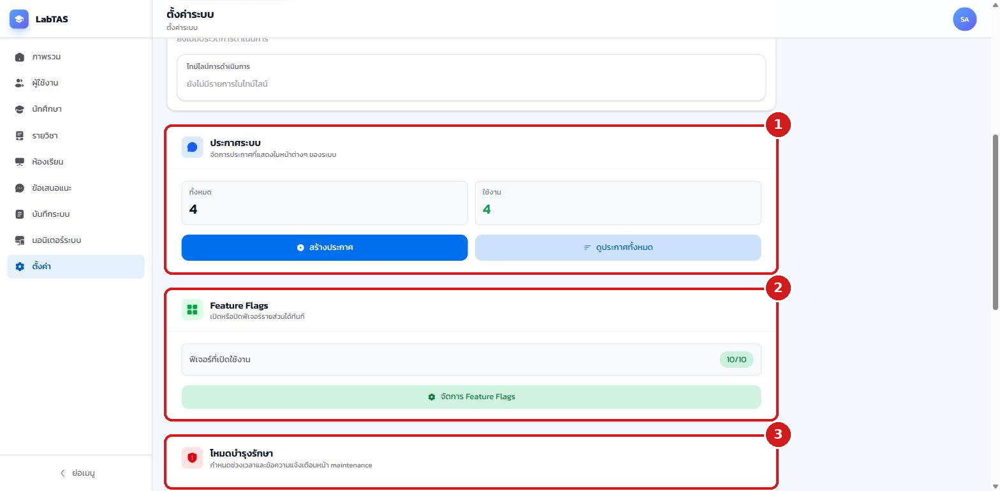
3.10 การเข้าถึงรายวิชาในมุมมองผู้ดูแลระบบ#
ผู้ดูแลระบบสามารถเข้าไปในห้องเรียนของทุกรายวิชาได้เหมือนอาจารย์เจ้าของวิชา โดยระบบจะแสดงแถบเตือนสีแดง "คุณกำลังเข้าถึงในมุมมองผู้ดูแลระบบ" ไว้ด้านบนตลอดเวลา เพื่อย้ำว่าการทำงานบางอย่างอาจแตกต่างจากมุมมองผู้สอน การจัดการภายในรายวิชา (สมาชิก งาน คะแนน เช็คชื่อ คิว) ใช้ขั้นตอนเดียวกับที่อธิบายในภาคของอาจารย์ (บทที่ 4–14)
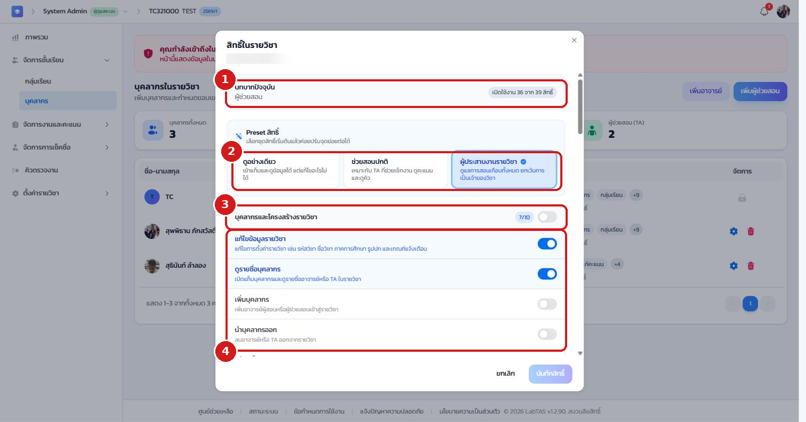